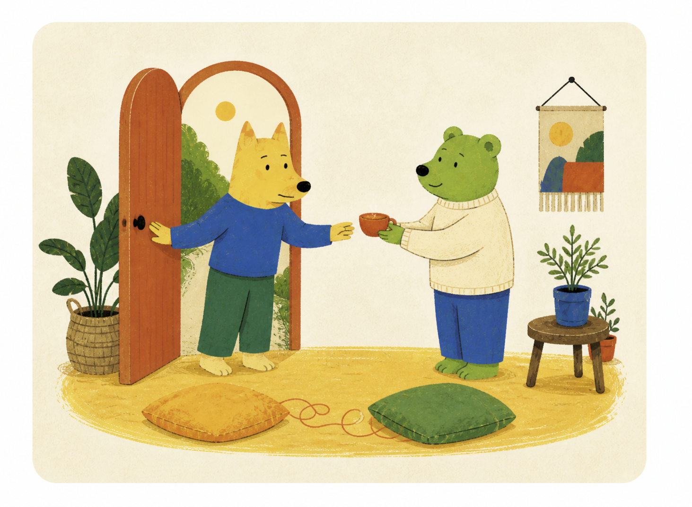
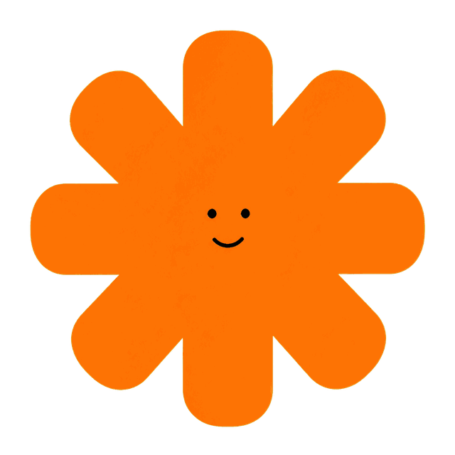
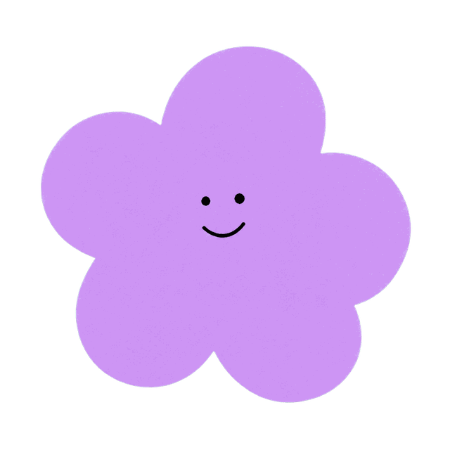
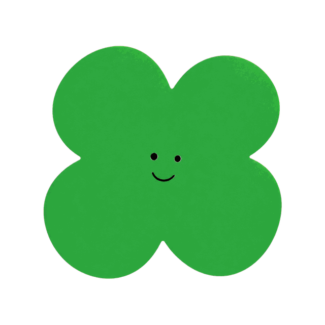
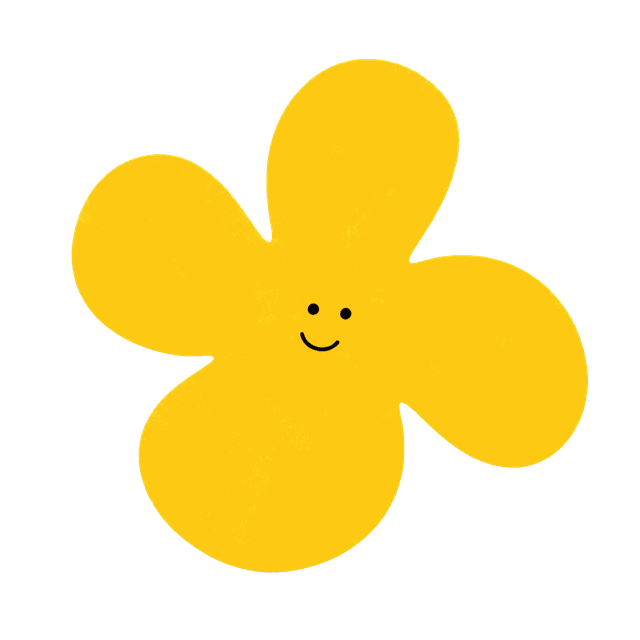
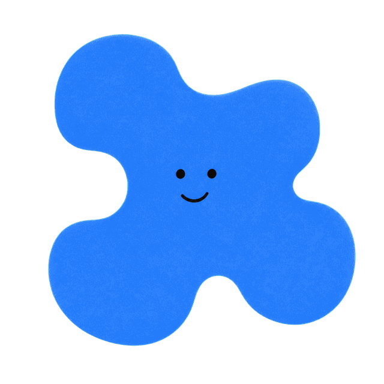

一个很像你的瞬间
你盯着一条迟迟没来的回复，心里很想问清楚；可对方真的靠近时，你又怕自己显得太需要，于是先冷下来，说一句“没事”。
你的依恋倾向是

关系对你很重要，但真正靠近时，你也可能紧张。你想确认对方还在，又担心自己的需要暴露以后，反而更容易受伤。
这不是人格定型，而是你在这段重要关系里更常出现的反应。
你盯着一条迟迟没来的回复，心里很想问清楚；可对方真的靠近时，你又怕自己显得太需要，于是先冷下来，说一句“没事”。
你可能先追着确认，得不到想要的回应后又突然撤回。对方只看见你的忽近忽远，你却同时经历着“怕失去”和“怕暴露”。
别人可能以为你故意让人猜。其实你不是想制造距离，而是不确定自己的需要能不能被安全接住。
靠近可以降低失去关系的焦虑，退开又能避免自己暴露得太多。两种动作都在保护你，只是一起出现时，会让连接变得很累。
摩擦迟迟没有收尾时，你更容易把变化理解成：这段关系可能正在远离。
这样可以保护脆弱，却也可能让对方晚一点才知道你真正需要什么。
“你可以表达需要，也可以暂停；但我们都会回来。”
不用一次解释整段关系，只说清楚此刻发生了什么、你有什么感受，以及一个对方能够回答的小请求。

恋爱模式
依恋模式
人格底色
思考模式
社交模式依据与边界：结果观察依恋焦虑与依恋回避两条连续维度，仅用于自我理解，不是临床诊断，也不会替你判断一段关系。